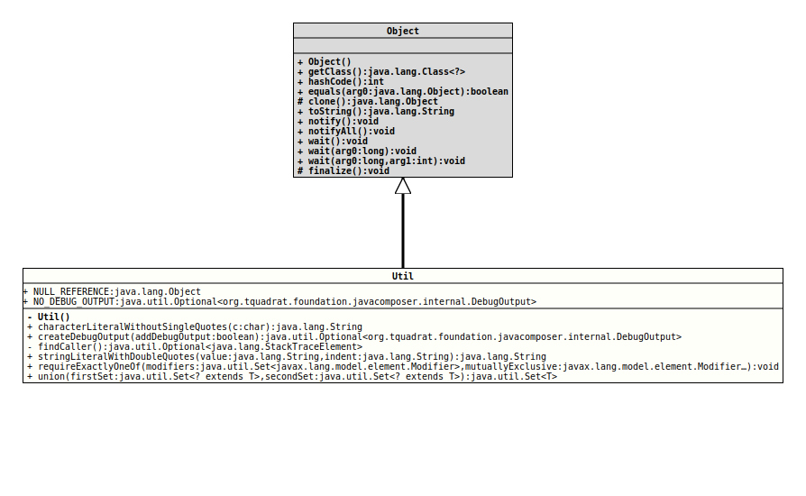

Class Util
java.lang.Object
org.tquadrat.foundation.javacomposer.internal.Util
@UtilityClass
@ClassVersion(sourceVersion="$Id: Util.java 1085 2024-01-05 16:23:28Z tquadrat $")
public final class Util
extends Object
Several utility functions to be used with JavaComposer.
- Author:
- Square,Inc.
- Modified by:
- Thomas Thrien (thomas.thrien@tquadrat.org)
- Version:
- $Id: Util.java 1085 2024-01-05 16:23:28Z tquadrat $
- Since:
- 0.0.5
- UML Diagram
-

UML Diagram for "org.tquadrat.foundation.javacomposer.internal.Util"
{kind=link}
-
Field Summary
FieldsModifier and TypeFieldDescriptionstatic final Optional<DebugOutput> The return value ofcreateDebugOutput(boolean)when no debug output is desired.static final ObjectThe placeholder fornullreferences. -
Constructor Summary
Constructors -
Method Summary
Modifier and TypeMethodDescriptionstatic final StringTranslates the given character into a String; when that character is a special character, it will be escaped properly so that it can be used in a Java String literal.static final Optional<DebugOutput> createDebugOutput(boolean addDebugOutput) Creates the debug output.private static final Optional<StackTraceElement> This method will find the method that makes the call into the Java Composer API and returns the appropriate stack trace element.static final voidrequireExactlyOneOf(Set<Modifier> modifiers, Modifier... mutuallyExclusive) static StringstringLiteralWithDoubleQuotes(String value, String indent) Returns the Java String literal representingvalue, including escaping double quotes.static final <T> Set<T> Creates a new set with the combined contents of the given sets.
-
Field Details
-
NULL_REFERENCE
The placeholder fornullreferences. -
NO_DEBUG_OUTPUT
The return value ofcreateDebugOutput(boolean)when no debug output is desired.
-
-
Constructor Details
-
Util
private Util()No instance allowed for this class.
-
-
Method Details
-
characterLiteralWithoutSingleQuotes
@API(status=INTERNAL, since="0.0.5") public static final String characterLiteralWithoutSingleQuotes(char c) Translates the given character into a String; when that character is a special character, it will be escaped properly so that it can be used in a Java String literal.- Parameters:
c- The input character.- Returns:
- The target String.
- See Also:
-
createDebugOutput
@API(status=INTERNAL, since="0.0.5") public static final Optional<DebugOutput> createDebugOutput(boolean addDebugOutput) Creates the debug output.- Parameters:
addDebugOutput-trueif some debug output should be added to the generated code,falseotherwise.- Returns:
- An instance of
Optionalthat holds the debug output; empty if the parameteraddDebugOutputisfalse. - See Also:
-
findCaller
This method will find the method that makes the call into the Java Composer API and returns the appropriate stack trace element.
The respective method is determined by the package name of the containing class: it does not start with
org.tquadrat.foundation.javacomposer.- Returns:
- An instance of
Optionalthat holds the stack trace element for the caller; will be empty if the call was internal.
-
stringLiteralWithDoubleQuotes
@API(status=INTERNAL, since="0.0.5") public static String stringLiteralWithDoubleQuotes(String value, String indent) Returns the Java String literal representingvalue, including escaping double quotes.- Parameters:
value- The input String.indent- The indentation String that has to be added in case of a line break.- Returns:
- The Java literal.
-
requireExactlyOneOf
@API(status=INTERNAL, since="0.0.5") public static final void requireExactlyOneOf(Set<Modifier> modifiers, Modifier... mutuallyExclusive) throws ValidationException Checks whether the givenSetofModifierinstances does contain one and only one of theModifierinstances given with the second argument,mutuallyExclusive.- Parameters:
modifiers- The set to check.mutuallyExclusive- A list of values from which one and only one must be in themodifiersset.- Throws:
ValidationException- None or more than oneModifierinstance was found.
-
union
@API(status=INTERNAL, since="0.0.5") public static final <T> Set<T> union(Set<? extends T> firstSet, Set<? extends T> secondSet) Creates a new set with the combined contents of the given sets.- Type Parameters:
T- The type of the set elements.- Parameters:
firstSet- The first set.secondSet- The second set.- Returns:
- The combined set.
-